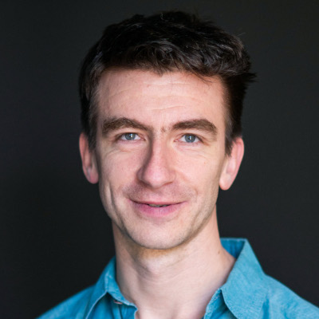
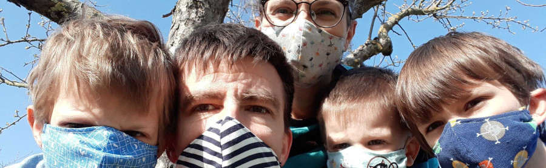

Google Scholar | Lab website | CV

Google Scholar | Lab website | CV
Since April 2026, I am a professor at the Department of Mathematics, Computer Science, and Informatics at Ghent University and a principal investigator at the VIB Center for AI and Computational Biology (VIB.AI), working on machine learning and data science for biological applications.
Prior to that, I was a group leader in the Hertie AI institute at Tübingen University.
I am interested in self-supervised and unsupervised learning, in particular contrastive learning, manifold learning, and dimensionality reduction for 2D visualization of scientific datasets. I am working with image data, text data, graph data, and single-cell RNA-seq data in neuroscience contexts.
I am also interested in statistical forensics and have been involved in the analysis of Russian electoral falsifications, war fatalities, Covid-19 excess mortality, and LLM usage in academic publishing. I am a member of the ELLIS society.
April 2026: Moved to Ghent and started my lab! Crazy.
In Ghent: upcoming.
In Tübingen (2020–25), I was teaching an introductory course on machine learning for MSc students in neuroscience and data science. In winter semester 2020/21, due to the Covid pandemic, the class was held online and the lectures were recorded in a studio.
In Heidelberg (2023/24), I taught a BSc course Einführung ins Machinelle Lernen (in German) and a MSc seminar Transformers, large language models, and their use in physics.
This is a partial list of [co-]first-/last-author papers grouped by topic; see Google Scholar for the complete list. Most papers are open access; for the ones that are not, I provide PDFs. Twitter icons link to the respective Twitter threads.
In 2013–2016 I was a postdoc in the Machens lab at Champalimaud Institute in Lisbon, working on statistical analysis of electrophyisological population recordings from the cortex.
In 2007–2012 I did my PhD in the Mehring lab, initially at Freiburg University and later at Imperial College London, working on computational motor control.
In 2000–2007 I studied computer science (BSc) at St. Petersburg ITMO University and then theoretical physics (MSc) at St. Petersburg State University.
Before that, I attended St. Petersburg Classical Gymnasium #610. I was part-time teaching computer science and physics there in 2002–2006 while studying at university. In 2004, together with a friend, I made a website 610.ru that is still online (with some changes).
Year Reviews ------------- 2019 1 2020 15 2021 20 2022 22 2023 28 2024 23 2025 26 2026 1
Venue Reviews (>1) ------------------------------- NeurIPS 31 ICML 18 ICLR 13 ECML 12 TMLR 12 Bioinformatics 5 Genome Biology 5 AISTATS 3 JMLR 3 Nature Biotech 2 Nature Comms 2 Nature Comms Bio 2 Nature Methods 2 PLoS Comp Bio 2 Political Analysis 2
Review lengths in kB -------------------- 0 | 1 | ::::::::. 2 | :::::::::: 3 | :::::::::::::::::::. 4 | ::::::::::::. 5 | :::::::: 6 | :::::: 7 | :: 8 | :. 9 | .
Area chair: ICLR, ICML, NeurIPS (all from 2026) Action editor: TMLR (from 2025)
Last updated: April 24, 2026
